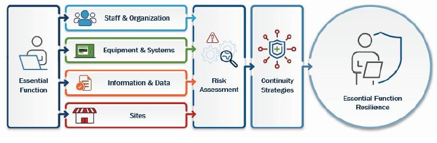
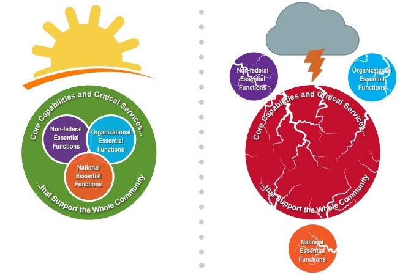

Introduction
If you've been following the devolution theory or Derek Johnson's claims, this chapter is where those theories come to die. Not because we say so, but because the actual government documents say so.
The purpose here is to clear up the common misunderstandings about Continuity in the federal response during emergency situations that our Nation faces. Continuity is an integral part in the National Response Framework (NRF) within each organizational department and agency. In today's world, there's a lot of wrong information on the internet, especially when it comes to the Law of War and the Devolution theory. We have developed this to dispel the misinformation that has been developed around the concept of continuity.
FEMA defines continuity as "the ability to provide uninterrupted critical services, essential functions, and support, while maintaining organizational viability, before, during and after an event that disrupts normal operations." Continuity "ensures the continuation of essential functions across a wide range of emergencies and disruptions and is a part of the fundamental mission of all organizations."
Source: FEMA.gov, National Continuity Programs
As someone with a Master's in Emergency Management from Trident University, I studied these frameworks in graduate school. I've taken the FEMA courses. I've read the Federal Continuity Directives cover to cover. And I can tell you unequivocally: continuity planning is designed to preserve the constitutional order, not overthrow it.
Our goal here is to help you understand what continuity planning is, in the context of the National Response Framework. This is complex stuff, but it's not secret. Everything we discuss here comes from publicly available government documents, many of which we link directly so you can read them yourself.
Laws That Govern Continuity
Continuity planning isn't some rogue operation. It's governed by a stack of laws, directives, and executive orders that have been in place across multiple administrations from both parties:
The landscape of Continuity planning in the United States is shaped by a comprehensive set of Presidential Directives, Executive Orders, and legislative acts, including the National Defense Authorization Act (NDAA). President George W. Bush's National Security Presidential Directive 51 (NSPD-51), issued in 2007, established the framework for federal government continuity efforts and designated crucial roles and responsibilities.
Homeland Security Presidential Directive 20 (HSPD-20) emphasized the importance of maintaining essential functions during emergencies for federal executive branch departments and agencies. Federal Continuity Directives (FCDs), issued by FEMA, offer detailed instructions to federal entities, guiding their continuity efforts. The Robert T. Stafford Disaster Relief and Emergency Assistance Act (Stafford Act) authorizes federal assistance during disasters and emergencies, influencing continuity planning at various levels. State and local laws also play vital roles in shaping continuity procedures and responsibilities.
📄Key Documents
Presidential Policy Directive 40 (PPD-40)
PPD-40 serves as the cornerstone in shaping national policy for ensuring the continuity of Federal Government programs, capabilities, and operations. It maintains a comprehensive continuity capability encompassing three key programs:
Continuity of Operations (COOP)
Ensures seamless government function during disruptive events. Establishes protocols to guarantee the availability of essential services, preserve critical infrastructure, and protect key personnel. This is what Jon Herold calls "devolution," but it's actually routine operational planning that every federal agency does.
Continuity of Government (COG)
Encompasses strategies to ensure the survival and functionality of the federal government in the event of a catastrophic incident. Involves provisions for alternative operational facilities, secure communication channels, and the mobilization of resources to sustain essential functions.
Enduring Constitutional Government (ECG)
Recognizes the significance of maintaining the fundamental principles and values embedded in the U.S. Constitution. Entails the continuous operation of constitutional processes, the protection of democratic institutions, and the preservation of the rule of law. This is the part that proves devolution is fiction.
At its core, PPD-40 is designed to safeguard the very fabric of the United States government, upholding the principles outlined in the Constitution. The overarching objective is to ensure the continuous and uninterrupted execution of the National Essential Functions within the Executive Branch under all conceivable conditions.
PPD-40 directs the Secretary of Homeland Security, through the FEMA Administrator, to coordinate continuity implementation among Federal Executive Branch departments and agencies. The FEMA Administrator is required to:
- Develop and publish Federal Continuity Directives (FCDs)
- Coordinate continuity operations across the executive branch
- Establish continuity program and planning requirements
- Conduct biennial assessments of individual departmental continuity capabilities
- Lead federal continuity training and exercise programs
- Provide continuity planning guidance for state, local, tribal, and territorial governments, non-governmental organizations, and private sector critical infrastructure owners and operators
In 2020, the President issued Executive Order 13961, "Governance and Integration of Federal Mission Resilience," and the Federal Mission Resilience Strategy (FMRS). This EO integrates continuity and enterprise risk management to increase day-to-day operational resilience within the Federal Executive Branch.
And here's what actually happened as a result, the part that conspiracy theorists never tell you:
The FMRS wasn't just a paper document that sat on a shelf. Every executive government department implemented it into their continuity programs. The Department of Energy, the Bureau of Reclamation, the Department of Interior. All of them. Every agency across the executive branch had to integrate the FMRS into their operational continuity planning. This happened before the new FCD even came out in 2024.
And here's the genius of what Trump actually did with the FMRS, the part the conspiracy theorists completely miss because they don't understand emergency management:
FMRS made continuity an everyday working task, not just a response to massive disruptions. It allowed telework to become part of the continuity framework, meaning that disruptions, whether a snowstorm, a cyber incident, or a pandemic, could be managed as routine operations rather than catastrophic events requiring emergency activation. Every agency incorporated continuity thinking into their daily operations.
That's not a secret military plan. That's smart governance. It's exactly what an emergency management professional would recommend: make resilience part of the everyday framework so you're not scrambling when something goes wrong. Trump's EO improved government operations. Period.
This is what real government operations look like: an executive order is issued, agencies implement it through their existing frameworks, and the continuity posture across the entire federal government gets stronger. It's methodical. It's documented. It's auditable. And it has nothing to do with a secret military operation.
National Security Presidential Directive 51 (NSPD-51)
NSPD-51 establishes a comprehensive national policy on the Federal Government's structures and operations continuity. It designates a single National Continuity Coordinator responsible for coordinating continuity policy development and implementation across federal agencies. NSPD-51 assigns "National Essential Functions" to federal agencies and provides guidance for state governments and entities below the federal level, emphasizing the creation of an integrated national continuity program.
The National Continuity Plan outlines specific procedures establishing and maintaining continuity during crises. A notable aspect focuses on "Enduring Constitutional Government," referring to continuing operations:
"...with proper respect for the constitutional separation of powers among the branches, to preserve the constitutional framework under which the Nation is governed and the capability of all three branches of government to execute constitutional responsibilities and provide for orderly succession, appropriate transition of leadership, and interoperability and support of the National Essential Functions during a catastrophic emergency."
Presidential Policy Directive 8: National Preparedness
Presidential Policy Directive 8 on National Preparedness outlines key components crucial for enhancing the security and resilience of the nation. It establishes the National Preparedness Goal, which serves as a foundation for preparedness efforts across various levels of government and sectors.
PPD-8 introduces the National Preparedness System, a framework designed to coordinate and integrate the nation's preparedness activities. The directive identifies core capabilities essential for effective preparedness, emphasizing the need for a comprehensive and all-encompassing approach. It introduces planning frameworks that guide the development of strategies and plans to address potential threats and hazards.
A central theme of PPD-8 is the engagement of the "whole community" in preparedness efforts. This approach recognizes that effective preparedness requires the involvement and collaboration of individuals, communities, organizations, and all levels of government. By embracing the Whole Community approach, PPD-8 encourages a collective, inclusive effort to enhance the nation's readiness for various challenges.
National Preparedness Goal
The National Preparedness Goal (NPG) articulates what it means for the "whole community" to be adequately prepared for the disasters and emergencies they may face. The term "whole community" encompasses individuals, communities, organizations, and all levels of government collaborating to enhance preparedness.
Key elements of the National Preparedness Goal include:
Core Capabilities
Essential capabilities the whole community must possess for addressing all phases of emergency management: prevention, protection, mitigation, response, and recovery.
Coordination & Integration
Coordinated effort among federal, state, local, tribal, and territorial entities, NGOs, and private sector participants.
Risk-Informed Approach
Preparedness efforts tailored to specific community threats and hazards through risk-informed perspectives.
Whole Community
Everyone has a role in preparedness, and collective action is necessary for a resilient, prepared nation.
Federal Continuity Directive: Framework
Before we dive into FCD 1 and 2, there is the FCD Framework document, the most crucial document as it is the foundation to the entire program of Continuity.
As it states: "This Framework is the first in a series of revised FCDs that build upon each other to provide direction and guidance for the Federal Executive Branch." Understand that the FCDs are directly relating to the executive branch and no other branch of government. This framework was developed because of the requirements found in PPD-40, National Continuity Policy; Executive Order 13961, Governance and Integration of Federal Mission Resilience; and the Federal Mission Resiliency Strategy.
With Continuity planning, the Federal Executive Branch must take an all-hazards approach to manage any disruption to its normal operations, "up to and including incidents or disruptions that occur with little to no warning." There are four planning factors that are considered in the FCD Framework:
- Staff and Organization
- Equipment and Systems
- Information and Data
- Sites
Every department and agency within the executive branch is to "identify their essential functions; determine the planning factors needed to accomplish those functions; conduct risk assessments for each planning factor; and identify and implement continuity strategies addressing the areas of greatest vulnerability."
📄Federal Continuity Directives 1 & 2
FCD-1: Federal Executive Branch National Continuity Program
FCD-1 operates under the overarching framework of PPD-40, developed collaboratively by DHS and FEMA. It establishes the core framework requirements for continuity planning within the federal government, with a specific focus on the executive branch. FCD-1 directs agencies to develop clear and concise plans that encompass a wide range of potential scenarios, ensuring agencies are well-positioned to respond swiftly and decisively to any unforeseen circumstances.
📄FCD-2: Essential Functions Identification, Business Process Analysis, and Business Impact Analysis
FCD-2 delves deeper into the practical aspects of continuity planning. This directive provides explicit guidance on how to identify essential functions, conduct business process analysis, and perform business impact analysis. These components are essential in crafting resilient plans that not only prioritize critical functions but also evaluate the potential repercussions of disruptions.
📄In essence, FCDs 1 and 2 collectively provide a comprehensive roadmap for federal agencies, guiding them through the intricacies of continuity planning and ensuring a robust framework for the sustained and effective functioning of the Federal Executive Branch in any contingency.
Continuity Guidance Circular

The Continuity Guidance Circular (CGC) is a comprehensive guide designed to assist non-federal entities, including state and local governments, communities, and businesses, in developing their own continuity programs. Its primary objective is to emphasize the critical role of continuity planning in maintaining essential services and functions during disruptions, ultimately contributing to the overall resilience of the community.
The CGC seeks to unify the application of continuity principles, planning, and programs across the nation, providing guidance on the integration of continuity concepts and establishing a common foundation for understanding continuity. Emphasizing the shared responsibility of continuity across the whole community, the document includes individuals, local communities, private and nonprofit sectors, faith-based organizations, and all levels of government.
Continuity is a concept "to unify the application of continuity principles, planning, and programs across the Nation" (FEMA Continuity Guidance Circular, 2018). Continuity is the ability to provide uninterrupted services to support before, during, and after an incident that disrupts normal operations.
The vision for continuity is to create a more resilient nation by fostering the whole community's involvement in integrating continuity plans and programs. The ultimate goal is to ensure the sustained operation of essential functions under all conditions. To realize this vision, the way that continuity is established is designed to be flexible and adaptable, catering to all types of emergencies and to each incident.
📄Continuity Planning

Continuity Planning is an essential responsibility shared by both federal and state governments, ensuring the uninterrupted performance of essential functions even in the face of disruptions or emergencies.
"COOP and COG are designed to ensure survival of a constitutional form of government and the continuity of essential federal functions."
Source: Congressional Research Service Report RL31857, "Executive Branch Continuity of Operations: An Overview" (PDF)
At the federal level, it guarantees that critical government agencies can maintain their operations, preserving the constitutional framework underpinning the nation's governance. This planning extends to strategies for leadership succession, enabling all branches of government to fulfill their constitutional responsibilities and maintain order during challenging times. It fosters unity of effort, providing a common doctrine and purpose that guides federal agencies in their preparedness and response efforts.
Similarly, at the state government level, continuity planning is crucial for ensuring that essential functions persist and that constitutional authority is upheld during emergencies. It aligns state resources and policies to ensure the stability and effective governance of the state even in the midst of crises.
Continuity of Operations (COOP)
Continuity of Operations (COOP) is all about making sure that any organization can keep doing its most important tasks, provide necessary services, and carry out critical functions even when things go wrong, like during a major problem or disaster. It's like having a backup plan to keep things running smoothly.
This backup plan is super important because it forms the foundation for getting ready to deal with tough times. When something goes wrong, whether it's a natural disaster, a cyberattack, or any other unexpected event, COOP makes sure that the essential parts of the organization don't just stop. Instead, they keep going, making sure that people get the help and services they need.
Even the U.S. Army has its own publicly available COOP planning procedures. DA PAM 500-30 provides detailed guidance on how the Army maintains continuity of operations, including cyber resilience requirements and coordination with information technology contingency plans. This is not a secret document; it is a standard Army pamphlet available to all personnel.
📄National Essential Functions (NEFs)
The National Essential Functions (NEFs) are a set of core functions and responsibilities that federal executive departments and agencies are tasked with during continuity of government (COG) and national response efforts. These functions are a set of fundamental responsibilities and activities that various federal executive departments and agencies must uphold to ensure the continued operation of the government and the effective response to emergencies, crises, and national security threats.
The National Continuity Policy
In the event of a major catastrophe or a significant national security incident occurring in the National Capital Region, including Washington, D.C., all government agencies, including the White House, are required to have detailed Continuity of Operations (COOP) plans ready. These plans serve as a playbook for ensuring the continuity of constitutional government functions during a crisis.
As part of these plans, the President of the United States has the authority, as outlined in the Presidential Succession Act of 1947, and more specifically 3 U.S. Code § 19, to establish a temporary government, often referred to as a 'succession in government' as in the delegation of authority. This means that specific individuals, carefully chosen and designated, would be prepared to step into critical leadership roles temporarily if the regular government leadership becomes unavailable or if the continuity of constitutional government is threatened due to a major catastrophe, national emergency, or significant security incident.
This arrangement ensures the continuation of essential government functions and maintains constitutional governance during these exceptional circumstances, as prescribed by Article II, Section 1, Clause 6 of the U.S. Constitution, which states: "In Case of the Removal of the President from Office, or of his Death, Resignation, or Inability to discharge the Powers and Duties of the said Office, the Same shall devolve on the Vice President."
Additionally, each government agency identifies members of an 'Emergency Relocation Group' who are tasked with relocating to a secure and undisclosed location. These individuals are part of the agency's contingency plan, ready to carry out essential constitutional government functions when the Continuity Plan is activated. Their role is crucial in preserving the government's ability to function effectively and uphold the Constitution during times of crisis.
This Is a Professional Discipline, Not a Conspiracy Theory
Continuity planning isn't something you learn from Substack articles or Telegram posts. It's a professional discipline with formal training programs, graduate-level coursework, and national-level exercises.
FEMA's Continuity Excellence Series is a multi-level professional certification program for continuity practitioners. It's not a weekend seminar; it's a comprehensive curriculum:
Level I: Professional Continuity Practitioner
9 courses required: IS-1300.a (Intro to COOP), IS-242.b (Communication), IS-230.e (EM Fundamentals), IS-700.a (NIMS), IS-800.d (NRF), E/L/K-1301 (Continuity Planning), E/L/K-1302 (Continuity Program Management), ICS training, and Exercise Development.
Level II: Master Continuity Practitioner
Requires Level I completion plus: Exercise Evaluation, Leadership & Influence, Instructor Certification, a 150-question comprehensive exam, and a capstone presentation or assistant instructor role.
Deep Dive: Sub-Topics
Each of these topics has its own dedicated page with full details:
📜Source Documents
- NSPD-51 / HSPD-20 (PDF)
- Federal Continuity Directive 1 (PDF)
- Federal Continuity Directive 2 (PDF)
- Continuity Guidance Circular 2018 (PDF)
- Stafford Act (PDF)
- PPD-8: National Preparedness (PDF)
- Guide to Continuity of Government (PDF)
- Continuity of Government Report 1 (PDF)
- Continuity of Government Report 2 (PDF)
- Presidential Succession Act (PDF)
- National Continuity Plan (PDF)
- Emergency Planning for Continuity of Government (PDF)
- The Continuity of Congress (PDF)
- Continuity Plan Template (PDF)
- FEMA L-1301 Student Manual (PDF)